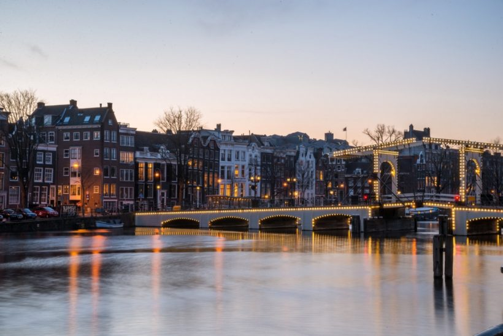
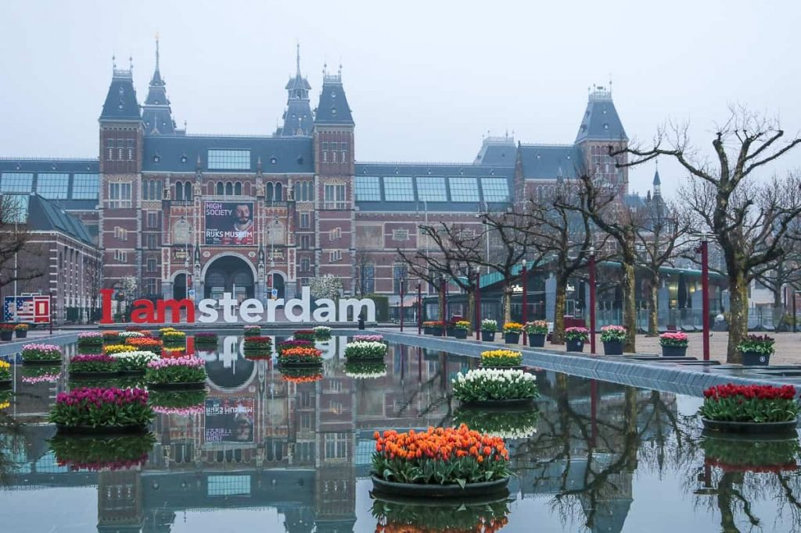
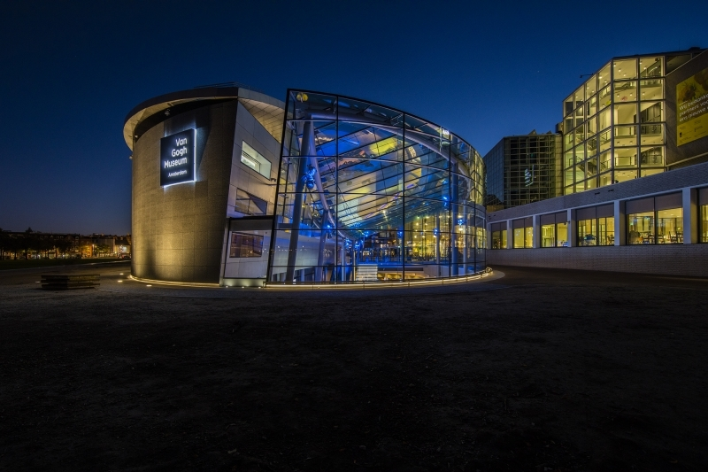

Amsterdã é prática, moderna e vanguardista. E essas qualidades de certa forma resumem as características de toda a Holanda, um país de território minúsculo que foi uma grande potência mercantil nos séculos 17 e 18 e hoje tem algumas das maiores multionacionais do mundo.A tolerância em questões como religião, drogas, sexo e liberdades individuais e o clima de festa que parece permanente na capital atrai o viajantes do mundo inteiro – especialmente jovens.
Passear de bicicleta por essa cidade plana e repleta de ciclovias é o melhor jeito de conhecer belezas arquitetônicas que vão do estilo gótico da Oude Kerk (Igreja Velha) às linhas modernas do Museu Van Gogh, em cujo acervo estão as principais telas produzidas pelas furiosas pinceladas do pintor.
3 PONTOS TURISTICOS PARA VISITAR EM AMSTERDÃ
Rijksmuseum
 São 80 galerias e mais de 8000 objetos e peças de arte, que te apresentam 800 anos da história e arte holandesas,
desde a Idade Média até o modernismo.
Quando a gente lembra que a Holanda foi uma das maiores potências da época das Grandes Navegações, fica mais fácil
entender como as famílias da burguesia holandesa conseguiram financiar tanta produção artística durante o chamado Século de Ouro holandês.
Daí vem a relevância da coleção do Rijks, que abriga algumas das principais obras de holandeses famosos. Você já deve ter ouvido alguns nomes:
Frans Hals, Rembrandt, Vermeer e Van Gogh, por exemplo.
Embora você possa visitar as obras desses artistas em seus museus dedicados em Amsterdam (como o Museu Van Gogh e a Casa de Rembrandt) é no Rijks
que você pode ver ‘um pouco de tudo’ que se produziu de arte na Holanda nos últimos séculos.
Van Gogh Museum
 Nascido na cidade holandesa de Groot-Zundert em 1853, Vincent Van Gogh só ganhou reconhecimento muitos anos depois de sua morte e
acabou se tornando uma das personalidades mais influentes na história da arte. E este museu conta um pouco de sua trajetória.
Nos três andares do Museu Van Gogh em Amsterdam estão expostas obras do artista em ordem cronológica, o que ajuda a compreender
a evolução de Van Gogh e relacionar sua arte com as fases da sua vida.
O acervo conta também com desenhos, cartas e peças de outros artistas inspirados por ele. Além disso, há exposições temporárias diversas.
O Museu Van Gogh é um dos pontos turísticos de Amsterdam mais visitados, além de tem a maior coleção de pinturas do artista no mundo,
com mais de 200 obras originais.
O local conta ainda com um café, lojinha e uma biblioteca.
Casa de Anne Frank

Um dos lugares mais emblemáticos da cidade é a Casa de Anne Frank, onde a garota judia viveu escondida com sua família para escapar dos
campos de concentração nazistas durante a Segunda Guerra Mundial.
Na época, Anne Frank escrevia um diário que, alguns anos depois de sua morte, foi publicado como livro e se tornou um best seller mundial,
com versões em mais de 70 idiomas.Chamada por ela de “anexo secreto”, a casa foi transformada em um museu, recriando os ambientes da época. Em uma visita é possível
conhecer cada cômodo e fazer uma viagem no tempo, entendendo melhor como foi o período que passaram por ali e se emocionando em muitos momentos.
Recentemente o museu passou por uma reformulação e ficou mais moderno, com um áudio-guia sobre contexto histórico do período. Para visitar, o ingresso deve ser
comprado com antecedência pela internet, com horário agendado.
Você também pode se interessar por: